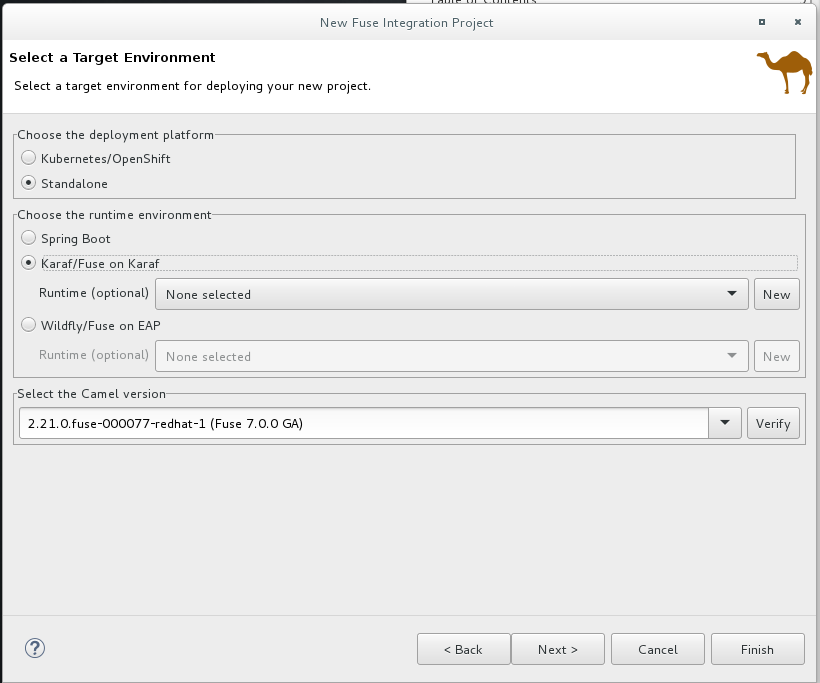
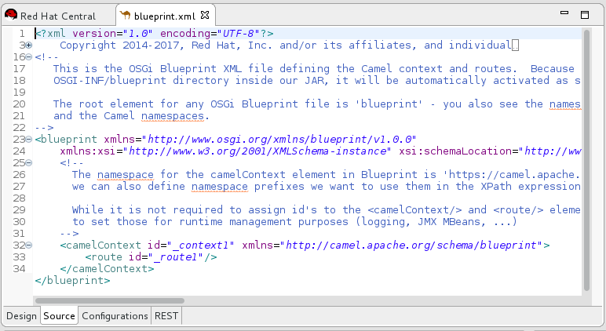
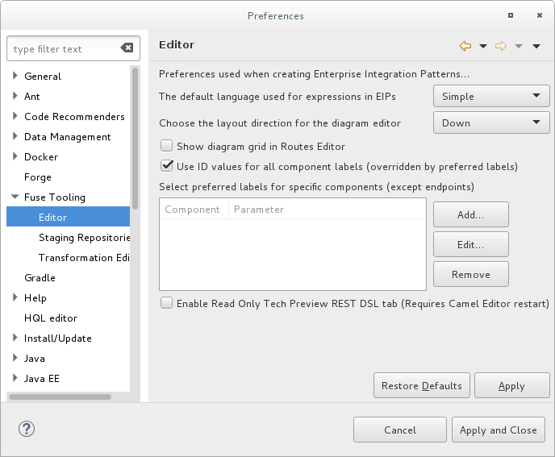

This tutorial walks you through the process of creating a Fuse Integration project. The project includes an initial route and a default CamelContext. A route is a chain of processors through which a message travels. A CamelContext is a single routing rule base that defines the context for configuring routes, and specifies which policies to use during message exchanges between endpoints (message sources and targets).
You must complete this tutorial before you follow any of the other tutorials.
In this tutorial you complete the following tasks:
- Create a Fuse Integration project
- Download test messages (XML files) for your project
- View the test messages
Before you can set up a Fuse Integration project, you must install Red Hat JBoss Developer Studio with Fuse Tooling. For information on how to install Developer Studio, go to the Red Hat customer portal for the installation guide for your platform.
Before you can follow the steps in the Publishing your project to Red Hat Fuse tutorial, you must install Java 8.
Open Developer Studio.
When you start Developer Studio for the first time, it opens in the JBoss perspective:

Otherwise, it opens in the perspective that you were using in your previous Developer Studio session.
From the menu , select File → New → Fuse Integration Project to open the New Fuse Integration Project wizard:

In the Project Name field, enter
ZooOrderApp.Leave the Use default workspace location option checked.
Click Next to open the Select a Target Runtime page:

- Select Standalone for the deployment platform.
Select Fuse on Karaf and accept No Runtime selected.
![[Note]](imagesdb/note.png)
Note You add the runtime later in the Publishing your project to Red Hat Fuse tutorial .
Accept 2.18.1.redhat-000021 for the Apache Camel Version.
Click Next to open the Advanced Project Setup page:

Select the Empty - Blueprint DSL template, and then click Finish.
Fuse Tooling starts downloading from the Maven repository all of the files that it needs to build the project, and then it adds the new project to the Project Explorer view.
If Developer Studio is not already showing the Fuse Integration perspective, it asks whether you want to switch to it now:

Click Yes.
The new ZooOrderApp project opens in the Fuse Integration perspective:

The ZooOrderApp project contains all of the files that you need to create and run routes, including:
ZooOrderApp/pom.xml— A Maven project file.Note The
pom.xmlentry in Project Explorer is decorated with a warning symbol.You can safely ignore this warning or you can eliminate it by following these steps: . Open the
pom.xmlfile in the tooling’s XML editor . Delete the<version>element from each dependency:camel-core,camel-blueprint, andcamel-test-blueprint. . Save thepom.xmlfile.ZooOrderApp/src/main/resources/OSGI-INF/blueprint/blueprint.xml— A Blueprint XML file that contains a preliminary Camel routing context and an initial route.
To view the preliminary routing context, open the
blueprint.xmlfile in the Editor view, and then click the Source tab.To ensure that the labels of the patterns and components that you place on the Design canvas are the same as the labels shown in the Tooling Tutorials:
- Select Window → Preferences → Fuse Tooling → Editor.
Check the Use ID values for all component labels option.
- Click Apply and Close.
Sample XML message files are provided for you to test your ZooOrderApp project as you work through the Tooling Tutorials.
To download and copy the provided test messages (XML files) to your project:
In the Developer Studio Project Explorer view:
- Right-click the
ZooOrderApp/srcfolder and then select New → Folder. The New Folder wizard opens. - For Folder name, type
data. - Click Finish.
- Right-click the
Click here to open a web browser to the location of the provided Tooling Tutorial resource
Fuse-tooling-tutorials-jbds-10.3.zipfile.Download the
Fuse-tooling-tutorials-jbds-10.3.zipfile to a convenient location that is external to the ZooOrderApp project’s workspace, and then unzip it. It contains two folders as described in About the Fuse Tooling Tutorials.From the messages folder, copy the six XML files to your ZooOrderApp project’s
src/datafolder.
Each XML message file contains an order from a zoo (a customer) for a quantity of animals. For example, the 'message1.xml' file contains an order from the Brooklyn Zoo for 12 wombats.
You can open any of the message XML files in the Editor view to examine the contents.
- In the Project Explorer view, right-click a message file.
From the popup menu, select Open.
The XML file open in the Editor view.
For example, the contents of the
message1.xmlfile shows an order from the Bronx Zoo for 12 wombats:<?xml version="1.0" encoding="UTF-8"?> <order> <customer> <name>Bronx Zoo</name> <city>Bronx NY</city> <country>USA</country> </customer> <orderline> <animal>wombat</animal> <quantity>12</quantity> </orderline> </order>
| Note |
|---|---|
You can safely ignore the
|

The following table provides a summary of the contents of all six message files:
Table 1. Provided test messages
| msg# | <name> | <city> | <country> | <animal> | <quantity> |
|---|---|---|---|---|---|
1 | Bronx Zoo | Bronx NY | USA | wombat | 12 |
2 | San Diego Zoo | San Diego CA | USA | giraffe | 3 |
3 | Sea Life Centre | Munich | Germany | penguin | 15 |
4 | Berlin Zoo | Berlin | Germany | emu | 6 |
5 | Philadelphia Zoo | Philapelphia PA | USA | giraffe | 2 |
6 | St Louis Zoo | St Loius MO | USA | penguin | 10 |
Now that you have set up your Developer Studio project, you can continue to the Defining a Route tutorial in which you define the route to process the XML messages.